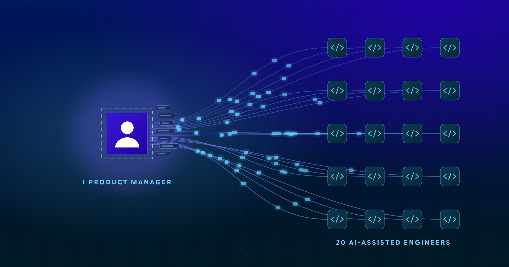

SERVICENOW
ServiceNow’s Build Agent Can Write 80% of Your App. It Still Can’t Tell You What to Build.
Build Agent makes code cheap. Knowing what to build is now the scarce skill.

For most of the history of software, the scarce resource was engineering capacity. Product managers kept a backlog longer than the team could ever finish, and “what should we build next?” was a question with a comfortable answer: whatever fits in the sprint.
That comfort is gone. When an engineer with an AI coding assistant can ship in a day what used to take a week, the backlog stops being the thing that protects the product manager. The team runs out of well-understood work to do, and the person who has to supply more of it is the same PM who was already stretched thin.
This post is about what happens next: what breaks when the constraint moves from building to deciding, and what a team can do about it.
Traditional staffing put roughly one product manager alongside eight engineers. According to a June 2026 VentureBeat guest post by Amazon software engineer Ishan Gupta, that ratio has effectively slid to about 1:20, not because companies hired fewer PMs, but because each engineer now ships so much more per day.
Do the arithmetic. That is at least two and a half times as many engineers per PM, and each of those engineers produces more than before. The volume of decisions the team can act on has multiplied. The number of people making those decisions has not.
The same piece describes how companies are responding. LinkedIn replaced its associate product manager track with a “Product Builder” program that trains generalists across product, design, and engineering. Anthropic, after rolling out Claude Code across its engineering organization, went the other direction and asked its growth team to hire more product managers. The specific moves differ, but the diagnosis is the same.
The bottleneck in software is no longer typing. It is deciding what to type.
A product manager’s day was already a juggling act. In a single afternoon, a PM might brief leadership, sit in a customer call, negotiate priorities with stakeholders, answer a developer’s question about a half-built feature, respond to a last-minute change, and write requirements for the next release. Add an engineering team that finishes work faster than the PM can define it, and four things start to fail, usually in this order.
The customer call happens on Tuesday. The notes get written Thursday, if they get written. By the time the insight reaches a backlog item, it has been summarized, paraphrased, and stripped of the sentence the customer actually said. PMs who spend as much time re-keying feedback into a system as they do talking to customers are spending their scarcest hours on clerical work.
Builders receive a ticket that says what to build but not who asked for it, or why, or in what words. A requirement without the customer’s own statement behind it is an instruction, not an explanation. Engineers can implement it, but they can’t push back on it, improve on it, or notice when it doesn’t fit the problem.
When the demand for decisions outruns the supply of evidence, something has to fill the gap. Usually it is the loudest voice in the room, the most recent escalation, or the assumption that has been repeated often enough to sound like a fact. Now those guesses ship at 20-engineer velocity.
Six weeks after release, someone asks which customer wanted this feature and what they said. Most teams cannot answer. That isn’t a documentation failure. It is a structural one: the link between the conversation and the feature was never captured, so there is nothing to recover.
Notice that none of these are engineering problems. Faster coding did not cause them, but it exposed them, because the slack that used to hide them is gone.
Adding product managers, or retraining generalists into product builders, addresses the people side of the ratio. It does not address the work side. A larger group of PMs still has to capture, synthesize, and route customer evidence by hand, and manual capture does not scale any better across ten PMs than it did across three.
The more durable fix is to change what the PM’s time is spent on. Judgment (weighing tradeoffs, choosing what matters, deciding what to say no to) is the part of the job only a person can do. Transcribing, tagging, de-duplicating, and re-typing are not. If those parts can be handled automatically, the PM’s capacity goes to the decisions that the faster team now needs.
Three principles follow from that.
The conversation itself, not someone’s memory of it, should be the source of record.
A customer need should carry the customer’s own words, so that anyone who touches it later can read what was actually said.
If the path from a spoken sentence to a shipped feature is recorded as a byproduct of the work, “who asked for this?” becomes a one-click question.
Customer Signals Agent was built around exactly this problem. It runs inside your ServiceNow instance, on the AI Agent framework and Now Assist, and turns customer meeting transcripts into structured, evidence-backed input for your product work.
The workflow is short. You create a conversation record to track the high-level details of the call, add the transcript, and click Analyze. The agent reads the entire conversation, not just the parts someone happened to write down, and proposes candidate customer needs, pain points, and personas. Customer comments and sentiment are attached to each need automatically as evidence. When a comment supports a need that already exists, the evidence is added to that need instead of spawning a duplicate, so the case for a real need strengthens over time.
Two design choices matter for the bottleneck problem in particular. First, the PM stays in charge of the decision. The agent proposes candidates; builders and product managers evaluate them, prioritize them, and relate them to work items. The judgment is still human. What changes is that it starts from a structured, evidence-backed view instead of a blank page and a stack of notes. Second, every candidate keeps its history: the extraction run, the prompt version, the model provider, the source segment, and the reviewer’s decisions. When someone asks why a feature was built, the answer is one click away.
It also fits the way ServiceNow teams already work. The agent uses the model provider your administrator has approved, and it is designed so that no customer data goes to IC5 Labs and none is used to train a model.
You don’t need new software to see whether the bottleneck has already moved on your team. Try these:
If the answers are uncomfortable, that is useful information. The teams that pull ahead in the next few years will not be the ones that build the fastest. They will be the ones that know what to build, can prove it, and can show every builder the customer behind the ticket.
Source: Ishan Gupta, “Claude Code turned every engineer into three. Now companies need more product thinkers,” VentureBeat, June 27, 2026.
Build Agent makes code cheap. Knowing what to build is now the scarce skill.
What happens when one ServiceNow builder wears every hat, and how to keep the customer in view.
Why platform teams need the same customer signal that product companies rely on.
Bring a customer transcript to a 30-minute demo and watch Customer Signals Agent turn it into evidence-backed needs.